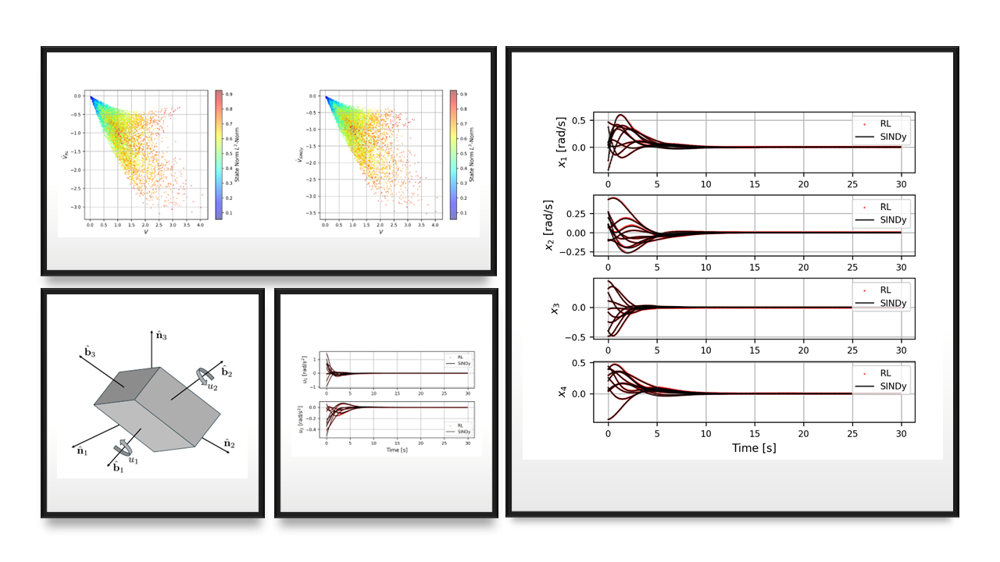

Safe reinforcement learning and certified controllers
Reinforcement learning offers a powerful alternative to classical guidance and control, but the absence of formal stability guarantees limits its use in safety-critical aerospace systems.
CIRO uses Sparse Identification of Nonlinear Dynamics to recover interpretable closed-loop dynamics and analytic control policies from trajectories generated by trained agents. Value functions and their derivatives provide Lyapunov-function candidates, enabling stability analysis and controller certification.
The resulting framework connects scientific machine learning, explainable decision-making, and formal assurance. Demonstrations include optimal attitude control and autonomous hovering near an asteroid.

